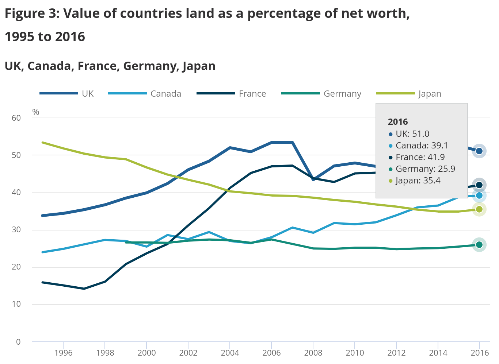

“There you may behold the rent”: Effects of a UK land dividend
See the simulation in PolicyEngine
In a 1775 lecture, an English Radical proposed making the land in every parish “the property of the corporation or parish,” and sharing the rents with society. About two-thirds of the revenue would fund public services, and the remainder would be divided “among the whole number of souls, male and female, married and single in a parish from the infant of a day old to the second infantage of hoary hairs.” That Radical was named Thomas Spence, and the lecture, The Meridian Sun of Liberty, became the first known mention of a universal basic income (UBI).
While Spence was the first to call for UBI, proposals for common ownership of land predated him by centuries. Today, the only large-scale government UBI, Alaska’s Permanent Fund Dividend, follows this model of funding through natural resources.
In this paper, we simulate a UBI funded by a land value tax (LVT), or what we call a land dividend, in the UK. We find that a 1 percent land dividend could fund a UBI of £16 per week, reducing poverty by 20% and leaving 70% of the population better off (you can explore the simulation in PolicyEngine). Unlike our previous simulations, this is a tax on wealth, and we discuss challenges measuring distributional effects given imperfect correlation between assets and income. But first, some background on the oldest idea in the UBI chronology.
History of the land dividend
Five and a half centuries before Spence, King Henry III sealed a pair of revolutionary English documents: the Magna Carta, and the Charter of the Forest. The latter sought to rebalance access to the commons, following decades of Kings closing off their forests, charging fees, rents, and penalties to those who hunted on or otherwise used the royal lands. The 1217 document allowed all to use the forest as pasture, providing that “Every freeman may agest his own wood within our forest at his pleasure, and shall take his pawnage.” So began England’s expansion of rights to common lands, and the subsistence they afford.
Thomas Paine became the first prominent advocate of a land tax, notably in his 1797 pamphlet, Agrarian Justice, which called for taxing land inheritances. While he stopped short of a full UBI, Paine proposed that the land tax be used for semi-universal payments, in what is also described as the first old-age pension proposal:
[Government must] create a national fund, out of which there shall be paid to every person, when arrived at the age of twenty-one years, the sum of fifteen pounds sterling, as a compensation in part, for the loss of his or her natural inheritance, by the introduction of the system of landed property. And also, the sum of ten pounds per annum, during life, to every person now living, of the age of fifty years, and to all others as they shall arrive at that age.
Spence’s proposal was partly a response to Paine’s (while they were both published in 1796-1797, they had spoken of their respective ideas prior). He felt that land was a source of wealth, and that it should be shared with all people—not only once upon a 21st birthday and then in older years. In The Meridian Sun of Liberty, Spence spoke of the universality in liberatory terms:
By this one bold resolve your chains are eternally broken, and your enemies annihilated. By this one resolve the power, the pride, and the arrogance of the landed interest, those universal and never ceasing scourges and plunderers of your race, are instantane∣ously and for ever broken and cut off. For being thus deprived and shorn of their revenues they become like shorn Sampson, weak as other men; weak as the poor dejected wretches whom they have so long been grinding and treading under toot. There you may behold the rent, which the people have paid into the parish treasuries…
Nearly a century later, American political economist Henry George introduced the idea of an annual land value tax. While Paine proposed taxing land upon inheritance and Spence proposed collective ownership of land, George sought to marry the concept of collective land ownership with the administrative difficulty of seizing the land; taxing land values each year based on market rents was his solution. George did not call for any specific use of the LVT revenue (such as UBI), but his 1879 book Progress and Poverty claimed that the private capture of land rents explains the persistence of poverty amid economic progress:
The great cause of inequality in the distribution of wealth is inequality in the ownership of land. The ownership of land is the great fundamental fact which ultimately determines the social, the political, and consequently the intellectual and moral condition of a people.
In the modern era, the economist Milton Friedman supported both the LVT and UBI, though not apparently together. Friedman, one of the most influential economists of the 20th century, proposed in his 1962 book Capitalism and Freedom replacing the existing safety net with a negative income tax (a means-tested UBI). In 1978, he then stated his support for LVT:
There’s a sense in which all taxes are antagonistic to free enterprise – and yet we need taxes. …So the question is, which are the least bad taxes? In my opinion the least bad tax is the property tax on the unimproved value of land, the Henry George argument of many, many years ago.
Today, only one government has enacted a true UBI: Alaska, through its Permanent Fund Dividend. Each year, every resident of Alaska receives a payment of between $1,000 and $3,000, regardless of age or income. How is it funded? The return on the Alaska Permanent Fund, its fund built from oil reserves. That is, the only true UBI on Earth is an expression of the shared ownership of land and natural resources.
Land and land taxation in the UK
The UK Office of National Statistics (ONS) estimates that UK land is worth £5.7 trillion, 51% of the country’s total net worth; this is a larger share than peer countries.

The UK does not have a direct land value tax, but it does have three taxes that indirectly tax the value of land:
- Council Tax is a tax on residential property levied on residents (owner-occupiers or renters). Councils assign each property a Council Tax band depending on its value, and then levy flat tax levels for all properties in the same band. Council Tax is means tested through Council Tax Reduction.
- Business rates are taxes on commercial property, set at roughly 0.5% of the property value.
- Stamp Duty Land Tax (or just “Stamp Duty”) is a tax on the transfer of property, set progressively between 0% and 12% of the sale price. Despite its name, it taxes the full property value, including both land and structures.
For simplicity, our simulation leaves these taxes intact, though we return to these taxes in the conclusion. Our simulation did require land value and income in a single dataset; since this does not exist, we fused data from three sources with machine learning to arrive at our estimates.
Results
We model a 1% tax on the £5.5 trillion in non-government land value, which raises £55 billion per year. By itself, this tax is essentially flat from a distributional perspective, raising the Gini inequality index by 0.08%.
However, when distributing the proceeds as UBI, the 1% LVT funds £16 per person per week, and becomes highly progressive. The bottom decile’s income would rise 16% and the top decile’s income would fall by 2%.
The 1% land dividend would cut poverty by 20% overall, though with significant heterogeneity by age: child poverty would fall 30%, while pensioner poverty would fall only 4%.
Impacts vary within income deciles as well. 89% of the bottom decile comes out ahead, though 7% of them would experience net income decreases of 5% or more (high-asset, low-income people, like many pensioners). Conversely, two in five members of the upper decile would come out ahead (low-asset, high-income people, like newly-graduated physicians).
To illustrate the effect on an high-asset low-income person, consider a single pensioner who owns a £1 million home. Given the average 62% land value share, they would own £620,000 of land, and thus face a £6,200 annual land tax bill. About £830 of which would be offset by the UBI. If their main income is the £7,200 from State Pension, the policy would push them well below the poverty line.
But is that person actually poor? They’re living in a £1 million home, which, based on the average price-to-rent ratio, would cost £28,000 per year to rent. If they were renting instead of being a homeowner, they’d need £28,000 extra income; indeed, it’s as if they are a renter in their own home, paying themselves rent each month. This concept has a name: imputed rent. Imputed rents factor prominently into measurements like GDP and inflation, but they’re not part of poverty measurements.
Or consider if this person doesn’t just have a £1 million home, but also £1 million in equities. Under a 1% LVT, they’d pay another £3,300 per year in taxes through their £330,000 in indirect land holdings. But in practice, this would just lower the value of their holdings, rather than being a tax they’d pay in that year, as our accounting would assume.
These scenarios can also intersect. Suppose the pensioner wanted to sell some stock to pay the LVT bill on their home. Even if we included capital gains in income (neither we nor the UK government do), we lack the behavioral knowledge to model how much they would sell.
There’s no straightforward way to marry asset-based taxes like LVT with income-based measurements like poverty. Accounting for imputed rents and capital gains would be a start, but ultimately these concepts differ in ways that cannot be fully reconciled, only explained.
A pro-growth step toward UBI
Economic theory states that the deadweight loss (economic inefficiency) of a tax depends, in part, on how elastic (responsive) the supply is to the tax. Personal income taxes shrink the economy because people reduce their labor supply in response to the tax; VATs shrink the economy because people reduce their consumption in response to the tax; and so on. Sometimes this responsiveness can grow the economy, when the reduced behavior has negative externalities, and these Pigouvian taxes like carbon taxes are generally considered the most economically efficient taxes.
Short of Pigouvian taxes, though, land taxes are most efficient, because their supply is fixed. That is, there is zero deadweight loss from land value taxes, because the price elasticity of supply is zero. A 2008 paper from the OECD Economics Department confirms this theory:
The reviewed evidence and the empirical work suggests recurrent taxes on immovable property being the least distortive tax instrument in terms of reducing long-run GDP per capita.
LVTs will be more efficient than the property taxes lauded in the OECD report, which include Council Tax and Business rates in the UK. Property taxes tax both land and structures, and taxes on structures suppress construction. LVT will be especially more efficient than the non-recurrent Stamp Duty, which discourages transferring property to owners that can make more productive use of it. The Fairer Share campaign proposes replacing these three taxes with a proportional property tax, reducing complexity and distortions from Stamp Duty, though stopping short of removing the tax on structures as an LVT would.
LVT is far from new: most of the world levies some form of land tax, even if it’s typically paired with an equal tax on structures and dubbed a property tax. In addition, some jurisdictions levy land only taxes, such as the progressive land tax up to 2.25% of Victoria, Australia, and the flat 4% tax (atop a 1% property tax) of Allentown, Pennsylvania, USA. Progressive land taxes can be avoided by splitting parcels, while flat land taxes can produce distributional issues if not offset by transfers. This analysis shows that pairing LVT with UBI can produce economically efficient, progressive redistribution.
Subscribe to the UBI Center
Get the latest posts delivered right to your inbox